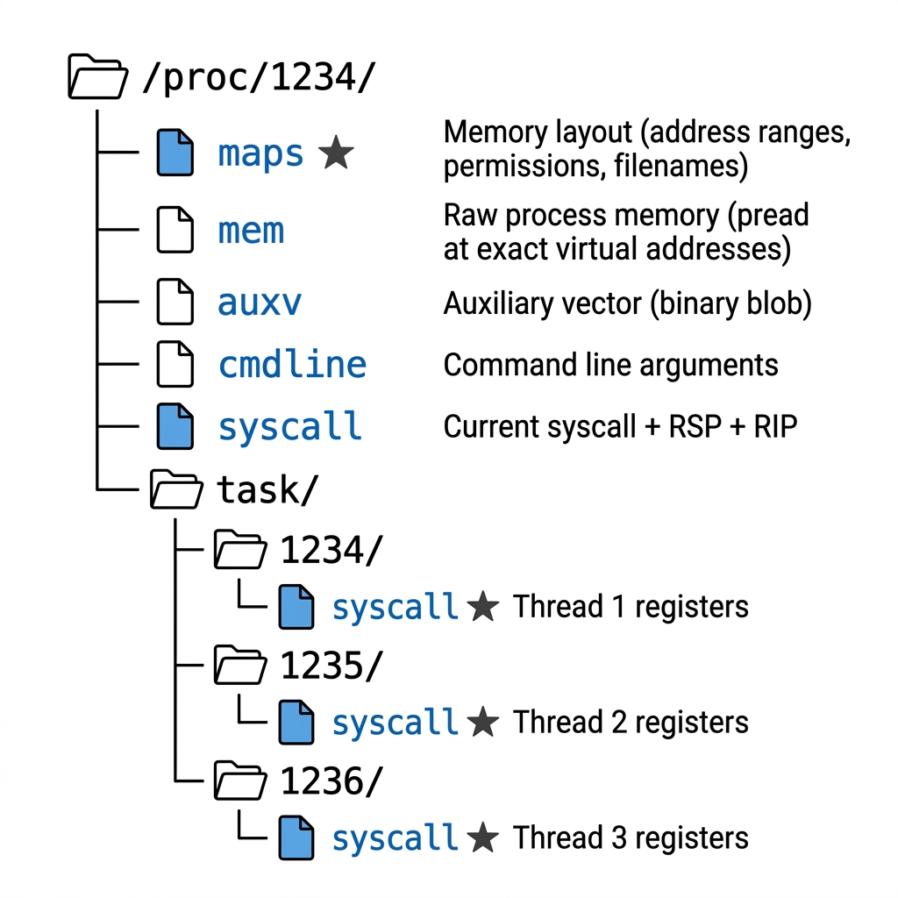
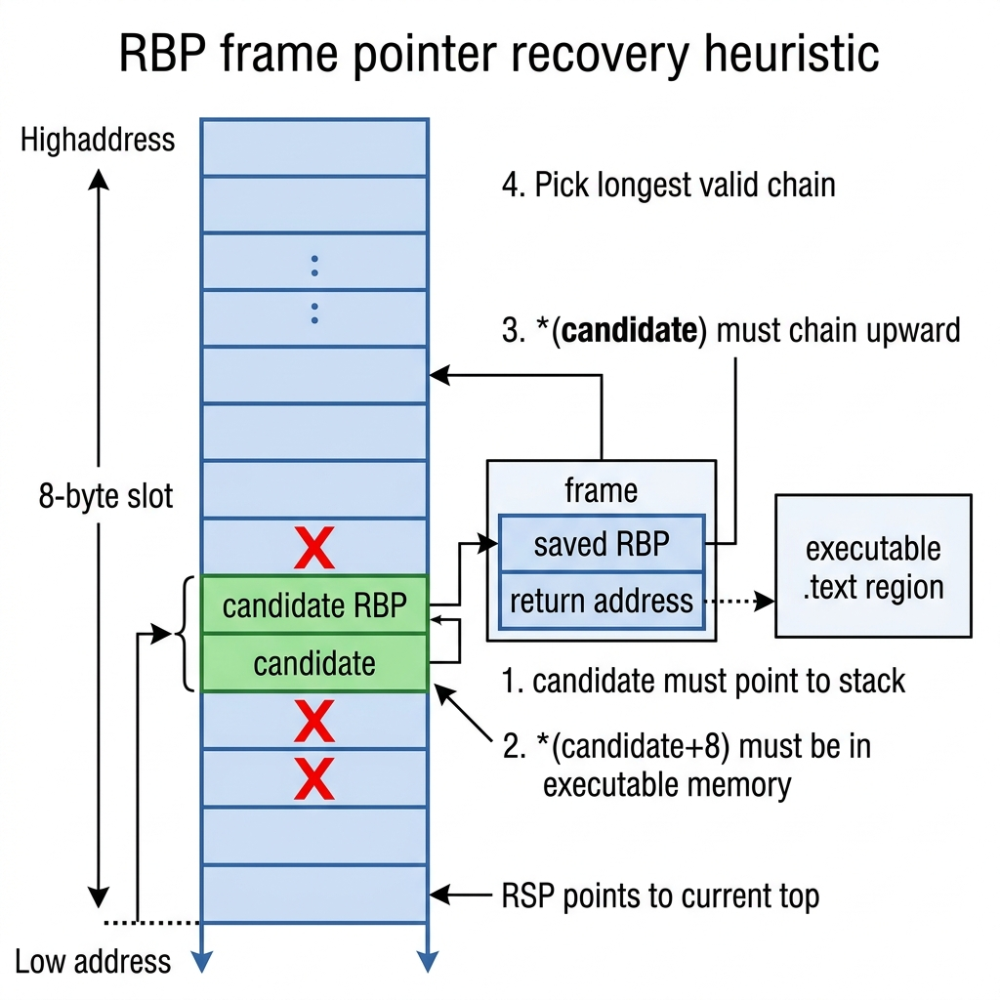

In Part 2, we learned the anatomy of an ELF core dump — the header, the program headers, and the four types of notes that GDB needs. We know what to write. Now the question is: where do we get the data?
The answer is five files in /proc/<pid>/. That's it. Five virtual files, and we can reconstruct everything GDB needs.

The /proc Filesystem as Our Backdoor
Let's be very precise about why this works. When you read /proc/<pid>/maps, the kernel doesn't send a signal to the process. It doesn't ask the process to cooperate. It doesn't use ptrace. It simply walks its own internal data structures — the mm_struct, the vm_area_struct linked list, the task list — and formats the results as text.
The process doesn't even know you're reading its data. It can't block you because it's not involved. This is fundamentally different from ptrace, which requires the target to stop and acknowledge.
This is why /proc works on D-state processes. The kernel is reading its own bookkeeping, not asking the process to do anything.
Memory Maps: /proc/<pid>/maps
This file gives us the complete memory layout of the process. Every loaded library, every heap allocation, every stack — it's all here:
$ cat /proc/1234/maps
55a8b1000000-55a8b1025000 r--p 00000000 08:01 1234567 /usr/bin/cvmfs2
55a8b1025000-55a8b10a0000 r-xp 00025000 08:01 1234567 /usr/bin/cvmfs2
55a8b10a0000-55a8b10b0000 r--p 000a0000 08:01 1234567 /usr/bin/cvmfs2
55a8b10b0000-55a8b10b2000 rw-p 000af000 08:01 1234567 /usr/bin/cvmfs2
7f4a10000000-7f4a10021000 rw-p 00000000 00:00 0 [heap]
7f4a12340000-7f4a12380000 r--p 00000000 08:01 2345678 /usr/lib64/libc.so.6
7f4a12380000-7f4a12500000 r-xp 00040000 08:01 2345678 /usr/lib64/libc.so.6
...
7ffc8a000000-7ffc8a021000 rw-p 00000000 00:00 0 [stack]
7ffc8a1f0000-7ffc8a1f4000 r--p 00000000 00:00 0 [vvar]
7ffc8a1f4000-7ffc8a1f6000 r-xp 00000000 00:00 0 [vdso]Each line is one memory region. The format is:
start-end perms offset dev inode pathnameWe parse this to build our mem_region_t array:
int parse_maps(int pid, mem_region_t **regions_out) {
char path[64];
snprintf(path, sizeof(path), "/proc/%d/maps", pid);
FILE *f = fopen(path, "r");
char line[512];
while (fgets(line, sizeof(line), f)) {
unsigned long start, end, offset;
char perms[5], name[256] = "";
sscanf(line, "%lx-%lx %4s %lx %*s %*s %255[^\n]",
&start, &end, perms, &offset, name);
regions[count].start = start;
regions[count].end = end;
regions[count].offset = offset;
regions[count].readable = (perms[0] == 'r');
regions[count].writable = (perms[1] == 'w');
regions[count].executable = (perms[2] == 'x');
strncpy(regions[count].name, name, 255);
count++;
}
return count;
}What we learn from each region:
| Field | What It Tells Us |
|---|---|
start–end |
Virtual address range → becomes p_vaddr in PT_LOAD |
perms (rwxp) |
Permissions → becomes p_flags in PT_LOAD |
offset |
File offset → goes into NT_FILE entries |
pathname |
Which file is mapped → goes into NT_FILE, also used for dump level filtering |
The First Region Trick
The first file-backed region in /proc/pid/maps is always the main executable. We save this path so that in standard dump mode, we can always keep the executable's memory while skipping other libraries:
if (g_exe_path[0] == '\0' && name[0] == '/') {
strncpy(g_exe_path, name, sizeof(g_exe_path) - 1);
}Regions We Skip
Some kernel-mapped regions cause EIO (Input/Output error) when you try to read them via /proc/pid/mem. We filter these out:
static int should_dump_region(const mem_region_t *r) {
if (!r->readable) return 0;
if (strstr(r->name, "[vvar]")) return 0; // kernel clock data
if (strstr(r->name, "[vvar_vclock]")) return 0; // variant clock
if (strstr(r->name, "[vsyscall]")) return 0; // legacy syscall page
// ... dump level logic follows
}[vvar] is a kernel-mapped page that provides fast clock access. It's readable in userspace, but reading it through /proc/pid/mem from another process triggers EIO. Same for [vsyscall]. We skip these because they contain no useful diagnostic data anyway.
CPU Registers: /proc/<pid>/task/<tid>/syscall
This is the most interesting data source. When a thread is blocked in a system call, the kernel records the syscall state in /proc/<pid>/task/<tid>/syscall:
$ cat /proc/1234/task/1234/syscall
0 0x7 0x7f4a12345678 0x1000 0x0 0x0 0x0 0x7ffc89ffee80 0x7f4a12367890The format is:
syscall_nr arg0 arg1 arg2 arg3 arg4 arg5 RSP RIPThose last two values are gold: RSP (stack pointer) and RIP (instruction pointer) — the two registers GDB needs most.
But wait — there are 27 registers in the x86_64 user_regs_struct, and we only get 9 values. Where do the rest come from?
Mapping Syscall Arguments to Registers
The Linux x86_64 syscall calling convention defines which register carries which argument:
// /proc/pid/syscall format:
// syscall_nr a0 a1 a2 a3 a4 a5 RSP RIP
//
// Linux x86_64 syscall convention:
// a0 = RDI, a1 = RSI, a2 = RDX, a3 = R10, a4 = R8, a5 = R9
memset(regs, 0, 27 * sizeof(unsigned long));
regs[15] = nr; // ORIG_RAX — which syscall was called
regs[10] = nr; // RAX — return value (set to syscall nr while blocked)
regs[14] = a0; // RDI — 1st argument
regs[13] = a1; // RSI — 2nd argument
regs[12] = a2; // RDX — 3rd argument
regs[7] = a3; // R10 — 4th argument
regs[9] = a4; // R8 — 5th argument
regs[8] = a5; // R9 — 6th argument
regs[19] = rsp; // RSP — stack pointer
regs[16] = rip; // RIP — instruction pointer
// User-mode segment selectors (constant for all userspace code)
regs[17] = 0x33; // CS — code segment
regs[20] = 0x2b; // SS — stack segmentThe registers we can't get from /proc/pid/syscall (like R11, R12, R13, R14, R15, RBX) are left as zero. GDB handles this gracefully — it just shows <unavailable> for those values. The important ones (RIP, RSP, and the syscall arguments) are all present.
But there's one critical register missing: RBP.
The RBP Problem and Heuristic Recovery
Why RBP Matters
When you compile C code with frame pointers (the default on most Linux distributions), every function creates a frame pointer chain on the stack:
+-----------------+ <-- higher addresses (stack bottom)
| saved RBP | --- points to caller's frame
| return addr | --- where to return after this function
| local vars |
+-----------------+
| saved RBP | --- points to parent's frame
| return addr | --- where parent was executing
| local vars |
+-----------------+
| saved RBP | --- points to grandparent's frame
| return addr | --- where grandparent was executing
| local vars |
+-----------------+
| ... |
+-----------------+ <-- lower addresses (RSP points here)GDB walks this chain to produce a backtrace:
- Read RBP → that's the current frame
- At address
RBP, read the saved RBP → that's the caller's frame - At address
RBP + 8, read the return address → that's where the caller was executing - Repeat until saved RBP is 0 (top of the call chain)
Without RBP, GDB can only show you frame 0 (the current function from RIP) and frame 1 (by scanning the stack for the return address). The rest of the backtrace is lost.
The Problem
/proc/<pid>/task/<tid>/syscall gives us RSP and RIP but not RBP. The kernel simply doesn't expose it through this interface.
For some binaries, this doesn't matter — if they were compiled with DWARF .eh_frame unwind information (which most modern code is), GDB can use the CFI (Call Frame Information) tables to unwind the stack without RBP. But for code compiled with -fomit-frame-pointer and without DWARF info, or in complex cases where DWARF and frame pointers interact, having the real RBP makes backtraces significantly more reliable.
The Heuristic
Our approach: scan the stack for values that look like valid frame pointers, and pick the one with the longest valid chain.

Here's the algorithm:
1. Find the stack region that contains RSP
2. Read 4KB of stack above RSP into a local buffer
3. For every 8-byte-aligned value on the stack:
a. Does it point to a valid stack address? If not, skip.
b. Read 16 bytes at that address from /proc/pid/mem:
- First 8 bytes = saved_rbp
- Next 8 bytes = return_address
c. Is the return_address inside an executable memory region? If not, skip.
d. Walk the chain: does saved_rbp also point to a valid frame?
e. Count the chain depth
4. The candidate with the deepest valid chain winsLet's look at the key functions:
Validation: Is This a Real Return Address?
static int is_executable_addr(unsigned long addr,
const mem_region_t *regions,
int num_regions) {
for (int i = 0; i < num_regions; i++) {
if (regions[i].executable &&
addr >= regions[i].start &&
addr < regions[i].end)
return 1;
}
return 0;
}If *(candidate + 8) falls inside an executable region (like .text of libc or cvmfs2), it's likely a real return address. Random data on the stack almost never happens to fall inside executable pages.
Chain Walking: How Deep Does It Go?
static int walk_fp_chain(unsigned long rbp_candidate,
int mem_fd,
unsigned long stack_lo,
unsigned long stack_hi,
const mem_region_t *regions,
int num_regions,
int max_depth) {
unsigned long fp = rbp_candidate;
int depth = 0;
while (depth < max_depth) {
unsigned long frame[2]; // [saved_rbp, return_addr]
ssize_t n = pread(mem_fd, frame, 16, (off_t)fp);
if (n < 16) break;
unsigned long saved_rbp = frame[0];
unsigned long ret_addr = frame[1];
// Return address must be in executable memory
if (!is_executable_addr(ret_addr, regions, num_regions))
break;
depth++;
if (saved_rbp == 0) break; // Top of chain (main)
if (saved_rbp <= fp) break; // Must move upward in stack
if (saved_rbp < stack_lo ||
saved_rbp >= stack_hi) break; // Must stay on stack
fp = saved_rbp; // Follow the chain
}
return depth;
}The beauty of this approach is that false positives are extremely rare. For a random value on the stack to pass all these checks, it would need to:
- Point to another stack address
- Where the next 8 bytes happen to be inside executable memory
- And the 8 bytes before that point to yet another valid stack+code pair
- And this chain would need to continue for multiple levels
The chance of this happening with garbage data is astronomically small. In practice, the heuristic finds the correct RBP on the first try for frame-pointer-compiled code.
The Result
When RBP recovery succeeds, the difference is dramatic:
Without RBP recovery:
(gdb) bt
#0 __internal_syscall_cancel (...) at cancellation.c:44
#1 __pthread_cond_wait_common (cond=..., mutex=...) at pthread_cond_wait.c:421Two frames. We know it's stuck in a condition wait, but we have no idea why it's waiting, or what the full call chain looks like.
With RBP recovery:
(gdb) bt
#0 __internal_syscall_cancel (...) at cancellation.c:44
#1 __pthread_cond_wait_common (cond=..., mutex=...) at pthread_cond_wait.c:421
#2 ___pthread_cond_wait (...) at pthread_cond_wait.c:453
#3 Tube<download::DataTubeElement>::PopFront (...) at .../cvmfs/util/tube.h:125
#4 download::DownloadManager::Fetch (...) at .../cvmfs/network/download.cc:2045
#5 cvmfs::Fetcher::Fetch (...) at .../cvmfs/fetch.cc:177
#6 catalog::ClientCatalogManager::StageNestedCatalogByHash (...) at .../cvmfs/catalog_mgr_client.cc:379
#7 catalog::AbstractCatalogManager::StageNestedCatalogAndUnlock (...) at .../cvmfs/catalog_mgr_impl.h:865
#8 catalog::AbstractCatalogManager::LookupPath (...) at .../cvmfs/catalog_mgr_impl.h:287
#9 cvmfs::GetDirentForPath (path=...) at .../cvmfs/cvmfs.cc:428
#10 cvmfs::cvmfs_lookup (req=..., parent=55380, name=0x... "alma9-alice-20260427_2") at .../cvmfs/cvmfs.cc:580
#11 loader::stub_lookup (...) at .../cvmfs/loader.cc:217Twelve frames. Now we can see the entire story: a FUSE lookup → catalog manager → download manager → blocking PopFront() on a tube waiting for a catalog download. That's the information a developer needs to fix the bug.
Thread Enumeration: /proc/<pid>/task/
Each subdirectory in /proc/<pid>/task/ is a thread ID:
$ ls /proc/1234/task/
1234 1235 1236 1237 1238 1239 1240We enumerate all of them and read registers for each:
int enumerate_threads(int pid, thread_info_t **threads_out) {
char path[64];
snprintf(path, sizeof(path), "/proc/%d/task", pid);
DIR *dir = opendir(path);
struct dirent *entry;
while ((entry = readdir(dir))) {
if (entry->d_name[0] == '.') continue;
int tid = atoi(entry->d_name);
threads[count].tid = tid;
int ret = read_thread_registers(pid, tid, threads[count].regs);
if (ret == 0) {
count++; // Successfully read registers
} else if (ret == -2) {
// Thread is running in userspace, not in a syscall
// Still include it, but registers will be partial
count++;
}
}
// ...
}The Main Thread First Rule
GDB treats the first NT_PRSTATUS note in the core as the "current thread" — the one shown by default when you open the core. We want this to be the main thread (TID == PID), so after collecting all threads, we swap it to index 0:
for (int i = 1; i < count; i++) {
if (threads[i].tid == pid) {
thread_info_t tmp = threads[0];
threads[0] = threads[i];
threads[i] = tmp;
break;
}
}This is a small detail, but it matters for UX. When someone opens the core in GDB, they should see the main thread's state first, not a random worker thread.
Running vs. Blocked Threads
Not all threads will be in a syscall. Some might be actively running on a CPU in userspace. For these, /proc/<pid>/task/<tid>/syscall returns the string "running" instead of register values:
if (strncmp(line, "running", 7) == 0)
return -2; // distinct from -1 (error)We still include these threads in the core — their registers will be zeroed, but GDB will at least show them in the thread list. This is honest: we're telling the user "this thread exists but we couldn't capture its state."
Auxiliary Vector: /proc/<pid>/auxv
The simplest data source. The auxiliary vector is a binary blob — we just read and embed it as-is:
int read_auxv(int pid, char **data_out, size_t *sz_out) {
char path[64];
snprintf(path, sizeof(path), "/proc/%d/auxv", pid);
int fd = open(path, O_RDONLY);
char *data = malloc(4096);
size_t sz = 0;
ssize_t n;
while ((n = read(fd, data + sz, 4096 - sz)) > 0)
sz += n;
close(fd);
*data_out = data;
*sz_out = sz;
return 0;
}No parsing needed. The kernel provides it in exactly the format GDB expects.
Raw Memory: /proc/<pid>/mem
This is how we read the actual memory contents for the PT_LOAD segments. The /proc/<pid>/mem file is a virtual file that mirrors the process's entire address space. You can pread() at any virtual address:
// Read one page of the process's memory at virtual address 0x7ffc89ff0000
unsigned char page[4096];
ssize_t n = pread(mem_fd, page, 4096, 0x7ffc89ff0000);This is remarkable. We're reading another process's memory without ptrace, without signals, without cooperation. The kernel handles it internally through its page table management.
Page-by-Page Reads
We don't try to read entire regions at once. A 8MB stack region might have guard pages in the middle — deliberately unmapped pages that catch stack overflows. Reading a guard page returns EIO:
for (size_t offset = 0; offset < region_size; offset += PAGE_SIZE) {
unsigned char page[4096];
ssize_t n = pread(mem_fd, page, PAGE_SIZE,
regions[i].start + offset);
if (n <= 0) {
// Guard page, unmapped page, or read error
memset(page, 0, PAGE_SIZE); // Zero-fill instead of aborting
zeroed += PAGE_SIZE;
}
fwrite(page, PAGE_SIZE, 1, core_file);
}Zero-filling is the key technique here. If we abort on the first failed page read, we lose everything. If we skip pages, the file offsets become wrong and the core is corrupted. By writing zeros for unreadable pages, we maintain consistent offsets while gracefully handling any memory layout surprises.
Summary: The Data Pipeline
Here's the complete picture of where every piece of the core dump comes from:
| Core Dump Component | Data Source | Key Info Extracted |
|---|---|---|
| ELF Header | Hardcoded | ET_CORE, EM_X86_64 |
| PT_LOAD headers | /proc/pid/maps |
Address ranges, permissions, sizes |
| NT_PRSTATUS (registers) | /proc/pid/task/*/syscall |
RSP, RIP + syscall args → mapped to register slots |
| NT_PRSTATUS (RBP) | /proc/pid/mem + heuristic |
Stack scanning for frame pointer chains |
| NT_PRPSINFO | /proc/pid/cmdline |
Process name, command line |
| NT_FILE | /proc/pid/maps |
File-backed regions → filenames |
| NT_AUXV | /proc/pid/auxv |
Raw binary blob, embedded as-is |
| LOAD segment data | /proc/pid/mem |
Page-by-page reads with zero-fill fallback |
In Part 4, we'll put it all together — the actual build_core() function that orchestrates everything into a single, GDB-compatible ELF core file.